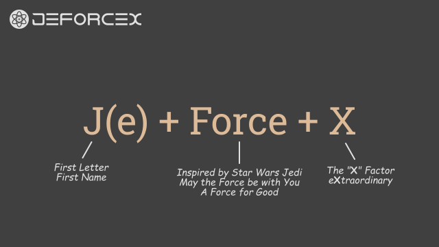
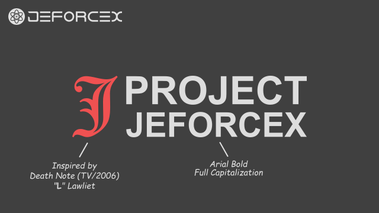
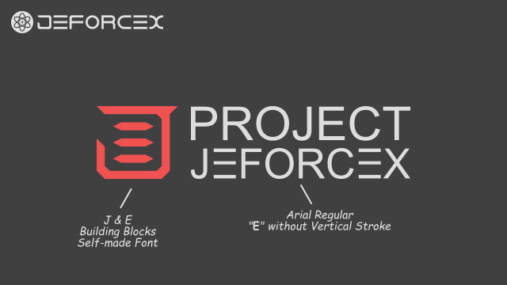
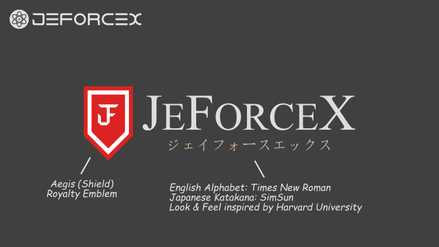
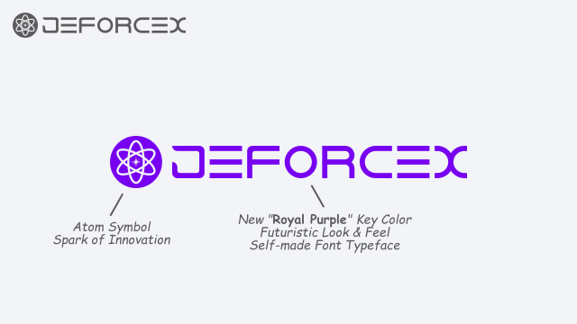

History
Brief Overview
The story of JΞFØRCΞX started with a Humble Beginning from a Pseudonym used for Internet User Account Registration to a Personal Innovation Brand Portfolio that seeks to Advance Humanity through Innovation.
For the record, JΞFØRCΞX has existed for a Total Duration of since its inception and continues to write new chapters of its story for the future to come.
Learn more about how JΞFØRCΞX began, what happened during the journey, and how it got to where it is today.

Image: Symbolic Representation of the Innovation Brand's Historical Timeline.

Image: Construct of the Pseudonym with Explanatory Annotation.
Chapter 1: Pseudonym
Period: June 2008 - November 2008 (6 months)
The story begins with Jay Force, an adventurous self-paced non-competitive Gamer looking to create a cool-sounding Pseudonym, so that the Real Full Legal Name would not be used for User Account Registration on the internet.
J - The first English Alphabet of Jay's Real First Name.
(e) - An addition to make the Pseudonym readable by the Human Tongue.
Force - Inspired by the "Force" of the Jedi from the Star Wars franchise.
X - Popular and cool-sounding English Alphabet during the 2000s era.
Thus the Pseudonym of JeForceX was created and used for Account Registration across a multitude of Gaming and Community Platforms.
Chapter 2: Personal Blog
Period: December 2008 - March 2012 (3 years 4 months)
With a desire to go further and do more than just Gaming, Jay started a Personal Blog known as "Project JeForceX" that was hosted via the Windows Live Spaces (now-defunct) platform.
The Personal Blog's Name was a simple addition of the word "Project" to the left side of Jay's Pseudonym.
The tagline was "Redefine Life", a statement to show the world that there is so much more to Human Life than just Education, Employment, Food, or Travel.
Topic Coverage included PlayStation Portable (PSP) Game Reviews, Personal Opinions on Japanese Anime series, and Character Figure collection.

Image: Trademark of the Personal Blog with Explanatory Annotation.

Image: Trademark of the Digital Media Channel with Explanatory Annotation.
Chapter 3: Digital Media Channel
Period: April 2012 - December 2019 (7 years 9 months)
With a desire to go even further and do even more than just Gaming, watching Anime, and collecting Character Figures, Jay transformed the Personal Blog into a Digital Media Channel by hosting the website via the Blogger platform alongside a Top Level Domain Name.
In addition to the existing topics covered by the Personal Blog, Cosplay and Ground Zero Events Coverage were introduced into the content pipeline.
The New Tagline was "Gateway to the World of Japanese Popular Culture", a statement to show the world that there is so much more than simply watching Anime from a digital screen or collecting Character Figures in a bedroom.
Chapter 4: Private Hobbyist
Period: January 2020 - December 2024 (5 years)
When the COVID-19 Pandemic began, Jay was presented with the opportunity to reflect on the past decade and imagine how Human Life would be like in the next decade when the world returns to normalcy.
During this period, Jay made an informed decision to discontinue the Digital Media Channel, transformed the assets into the Personal Brand of a Private Hobbyist, and returned to its origin with a simplified name of JeForceX™.
The Personal Brand's website was hosted via Tumblr with a new Perspective-based Content Development Direction and greater emphasis on the Privacy and Happiness of Japanese Popular Culture Hobbyists (J-Hobbyist).

Image: Trademark of the Private Hobbyist with Explanatory Annotation.

Image: Trademark of the Innovation Brand with Explanatory Annotation.
Chapter 5: Innovation Brand
Period: January 2025 - Present ()
After the world returned to Normalcy beyond the shadow of the COVID-19 Pandemic, Jay was grateful to and inspired by the innovation pioneers of Pfizer-BioNTech (Comirnaty), OpenAI (ChatGPT), and SpaceX (𝕏, Grok, Starlink).
Jay aspires to give back to Humanity by building an Innovation Brand, JΞFØRCΞX, with a new Purpose to Advance Humanity Through Innovation, and a Portfolio of Products that include Game, Storytelling, and Automation.
Navigation
-
 Brand
Brand
-
 Innovator
Innovator
-
 About
About
-
 Home
Home